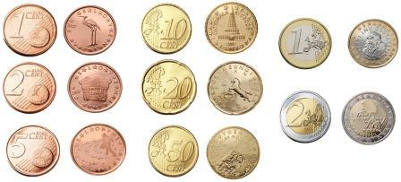

DINAR KAO MIRNO MORE: 1 evro danas 117,58 po srednjem kursu

Vesti
TV UŽIVO 16°C Naslovna TV uživo Uživo Emisije TV Program Vesti Politika Izbori 2020 Društvo Biznis Srbija Beograd OSI Informator Edukacija Specijal Lični stav Stars Rijaliti TV šou Sport Fudbal Košarka Tenis Ostali sportovi Hronika Region Hrvatska Crna Gora Severna Makedonija Bosna i Hercegovina Planeta Austrija Zabava Zdravlje Pop kultura Žena Ludi svet Zanimljivosti Tech Auto TV Program Igrice Održiva budućnost Konferencije - uključi se ecolucija podcast News Stil Impressum Marketing Kontakt Uslovi korišćenja Pravila komentarisanja Terms and Conditions / Privacy PolicyNajnovije vesti
08:57h KONAČNI REZULTATI IZBORA U CRNOJ GORI: Milov DPS-30 mandata, Za budućnost Crne Gore 27, Mir -10, Crno na bijelo- 4! 08:49h OBELEŽITE DAN SRPSKOG JEDINSTVA, SLOBODE I NACIONALNE ZASTAVE UZ KURIR: Sutra poklon NALEPNICA plus dodatak STARS 08:42h RAT MILIJARDERA: Ilon Mask opleo po Bilu Gejtsu i poručio mu da NEMA POJMA! 08:37h RUKOVODSTVO PARTIZANA ŽELI DA PRIKRIJE SVOJE GREŠKE! Krstajić: Neko HALUCINIRA da Kokeza radi protiv crno-belih! 08:36h NOVA MINIMALNA ZARADA 32.000 DINARA: Danas i zvanično o minimalcu i platama 350.000 radnika u SrbijiUŽIVO SVE O KORONI U SRBIJI: Blagi porast broja novozaraženih, odmah se 48 78
DRAGOLJUB OJDANIĆ SAHRANJEN UZ ZVUKE MARŠA NA DRINU: Diković podsetio na 12 34 374
OVA KNJIGA ZVEZDANA JOVANOVIĆA UZDRMAĆE SRBIJU: Otkrio ko je iz demokratskih 17 85
NOVI ŠOKANTNI SNIMAK IZ NOVOG SADA: Mladić skakao po kolima, a onda uradio 32 39
DANAS SLAVIMO POLAGANJE POJASA PRESVETE BOGORODICE! Da biste imale porod, 3 411
JEZIVA MISTERIJA HAZARSKOG GROBLJA KOD ČELAREVA: Stalno se dešavaju nesreće, 4 109
HOĆE LI GRAĐANI SRBIJE BITI KORIŠĆENI ZA TESTIRANJE KINESKE VAKCINE Dr 23 104
IMUNOLOG SRĐA JANKOVIĆ: Neophodna izolacija i još rigoroznije mere! Evo 5 778
RAMPA ZA SRBE, AGENCIJE PRED TOTALNIM SLOMOM! Ako Grčka ne otvori granice 45 137
GRCI I DALJE SKRNAVE SRPSKU SVETINJU: Oni u tangama i toplesu, a mi s vencima 7 12
AUTORSKI TEKST KSENIJE PAVLOVIĆ MEKATIR ZA KURIR: Srbija je postala prioritet 9 18
DR KON SAM ANALIZIRAO BROJKE O SMRTNOSTI OD KORONE: Evo do kakvih je zaključaka 6 8
Foto: Youtube Printscreennarodna banka srbije
DINAR KAO MIRNO MORE: 1 evro danas 117,58 po srednjem kursu
Biznis09.09.2020. 12:54h 09.09.2020. 13:07h
BEOGRAD - Zvanični srednji kurs dinara prema evru danas je 117,5805 dinara za jedan evro, objavila je Narodna banka Srbije.
Zvanični srednji kurs je u utorak bio 117,5636 dinara za jedan evro.
U odnosu na evro, dinar danas ima istu vrednost kao pre mesec dana, kao pre godinu dana i kao na početku ove godine. Dinar je ove godine bio najslabiji 13. marta, kada je jedan evro koštao 117,6739 dinara, a najjači 30. marta, kada se za evro plaćalo 117,4966 dinara.
Narodna banka Srbije je ove godine na deviznom tržištu prodala 1,35 milijardi evra da bi ublažila dnevne promene kursa.
(Kurir.rs/Tanjug)
NE PROPUSTITE
OVI MAJSTORI MESEČNO ZARADE OD 100.000 DIN DO 5.000 EVRA: Zašto je za najtraženija zanimanja u Srbiji MALO INTERESOVANJE
OVO JE SPRAVA KOJA JE ZALUDELA VOĆARE U SRBIJI: Nebojšin izum izazvao lavinu komentara, sakuplja šljive bez muke (VIDEO)
DANAS NA SVOJIM BANKOVNIM RAČUNIMA OČEKUJTE 18.000 DINARA VIŠE! Počinje isplata poslednjeg minimalca
PROSEČNA NETO PLATA ZA JUN 59.740 DINARA: Realno veća za 9,6 odsto u odnosu na prošlu godinu
Kurir Autor: Kurir Kliknite za sledeću vest dinar evro srednji kursRAZMENA SADRŽAJA
Inicijalizacija u toku... Najnovije Najčitanije Reakcije DIK CGKONAČNI REZULTATI IZBORA U CRNOJ GORI: Milov DPS-30 mandata, Za budućnost Crne Gore 27, Mir -10, Crno na bijelo- 4!
08:57OBELEŽITE DAN SRPSKOG JEDINSTVA, SLOBODE I NACIONALNE ZASTAVE UZ KURIR: Sutra poklon NALEPNICA plus dodatak STARS
08:49 o električnim automobilimaRAT MILIJARDERA: Ilon Mask opleo po Bilu Gejtsu i poručio mu da NEMA POJMA!
08:42 UBEĐENRUKOVODSTVO PARTIZANA ŽELI DA PRIKRIJE SVOJE GREŠKE! Krstajić: Neko HALUCINIRA da Kokeza radi protiv crno-belih!
08:37NOVA MINIMALNA ZARADA 32.000 DINARA: Danas i zvanično o minimalcu i platama 350.000 radnika u Srbiji
08:36 Sve najnovije vesti pratite na kuriru NAJNOVIJE INFORMACIJEUŽIVO SVE O KORONI U SRBIJI: Blagi porast broja novozaraženih, odmah se oglasilo Ministarstvo zdravlja 48 78
13.09. na porodičnom groblju OjdanićaDRAGOLJUB OJDANIĆ SAHRANJEN UZ ZVUKE MARŠA NA DRINU: Diković podsetio na blistave trenutke vojničke karijere generala 12 34 374
13.09. iznošenje novih dokazaOVA KNJIGA ZVEZDANA JOVANOVIĆA UZDRMAĆE SRBIJU: Otkrio ko je iz demokratskih vlasti bio umešan u ubistvo Đinđića 17 85
13.09. hitNOVI ŠOKANTNI SNIMAK IZ NOVOG SADA: Mladić skakao po kolima, a onda uradio nešto odvratno (VIDEO) 32 39
13.09.DANAS SLAVIMO POLAGANJE POJASA PRESVETE BOGORODICE! Da biste imale porod, treba da uradite jednu stvar 3 411
13.09. Sve najčitanije vesti SPREMAN ZA NOVE IZAZOVENOVAK IZAŠAO NA ŠLJAKU I PORUČIO: Lep je osećaj... (VIDEO) 9 1k
13.09. situacija može da se pogoršaIMUNOLOG SRĐA JANKOVIĆ: Neophodna izolacija i još rigoroznije mere! Evo od čega zavisi da li će biti pogoršanja 5 778
13.09. nova likvidacija u beograduUZNEMIRUJUĆE! OVO JE FOTOGRAFIJA STOJANOVIĆA POSLE ATENTATA: Devojka je pokušala da pomogne teško povređenom Strahinji! 263 450
13.09.DANAS SLAVIMO POLAGANJE POJASA PRESVETE BOGORODICE! Da biste imale porod, treba da uradite jednu stvar 3 411
13.09.PODLEGAO POVREDAMA! Preminuo Strahinja Stojanović, čiji je džip dignut u vazduh na Novom Beogradu 8 133 408
13.09. Sve reakcijeVic dana
Došao Mujo kod doktora: - Doktore, leva noga me stalno boli. - To je zbog godina. - Kako to? Leva se rodila isto kad i desna, pa me ona ne boli.
PRATI KURIR NA FACEBOOKU
SPREMAN ZA NOVE IZAZOVENOVAK IZAŠAO NA ŠLJAKU I PORUČIO: Lep je osećaj... (VIDEO) 9 1k
situacija može da se pogoršaIMUNOLOG SRĐA JANKOVIĆ: Neophodna izolacija i još rigoroznije mere! Evo od čega zavisi da li će biti pogoršanja 5 778
nova likvidacija u beograduUZNEMIRUJUĆE! OVO JE FOTOGRAFIJA STOJANOVIĆA POSLE ATENTATA: Devojka je pokušala da pomogne teško povređenom Strahinji! 263 450
DANAS SLAVIMO POLAGANJE POJASA PRESVETE BOGORODICE! Da biste imale porod, treba da uradite jednu stvar 3 411
PODLEGAO POVREDAMA! Preminuo Strahinja Stojanović, čiji je džip dignut u vazduh na Novom Beogradu 8 133 408
ovan bik blizanci rak lav devica vaga škorpija strelac jarac vodolija ribeDanas biste mogli osetiti jak poriv da potrošite novac na zadovoljavanje svojih potreba. Nije da vam je neophodno, ali možete se pokazati pred svima. Dobro ...
Ispunjeni ste, srećni i čini vam se da je ljubav svuda oko vas. To je zasad jedino što vam treba. Dobro se osećate.
Vi ste istinska umetnička duša. Danas svojim osmehom začinjavate sve što radite. Ljudima će prijati vaša blizina. Uzimajte više tečnosti.
Ukoliko niste na poslu, kod kuće ste i obrnuto. Život ste sveli u krajnje dosadne okvire, što ne priliči vašem temperamentu. Vi ste osoba koja voli ljude. ...
Još danas radite punom parom. Kao da je to ono što ste mogli da date od sebe i već od idućeg dana je mirnije. Angažovali ste se do maksimuma na svim mogućim ...
Pod jakim ste pritiskom. Ukoliko je neko od vama dragih bića u problemima, doživećete to isuviše lično. Prolazite kroz sve faze kroz koje prolaze vaši ...
Pod užasnim ste pritiskom i čini vam se da ste pred pucanjem. Kakva god muka da vas je spopala, znajte da će proći. Potreban vam je odmor.
Povoljno za zaljubljene, kojima barem u ljubavi cvetaju ruže. Prijatna dešavanja možete očekivati u večernjim časovima. Dobro se osećate.
Otvorena vam je mogućnost putovanja, pa ne bi bilo loše da o njoj porazmislite. Osećali biste se kao novi. Više šetnje će vam prijati.
Osećate da vas neko namerno pecka. Vi ćete burno reagovati. Da ste u stanju da se smirite, uvideli biste da za ljutnju razloga i nema. Više šetnje će vam ...
Danas nastojite da maksimum pažnje poklonite svom partneru. Bilo da ste u bračnim vodama ili u ispunjenoj vezi, danas će najvažnija osoba biti partner. ...
Brinu vas novčani izdaci. Stvar je u tome da, koliko god da zaradite, nekako nije dovoljno da pokrijete sve troškove. Kad je o partneru reč, obratite posebnu ...
Saznaj više ADRIA MEDIA PREPORUKE Impressum Marketing Kontakt Uslovi korišćenja Pravila komentarisanja Terms and Conditions / Privacy Policy Kurir © 2020